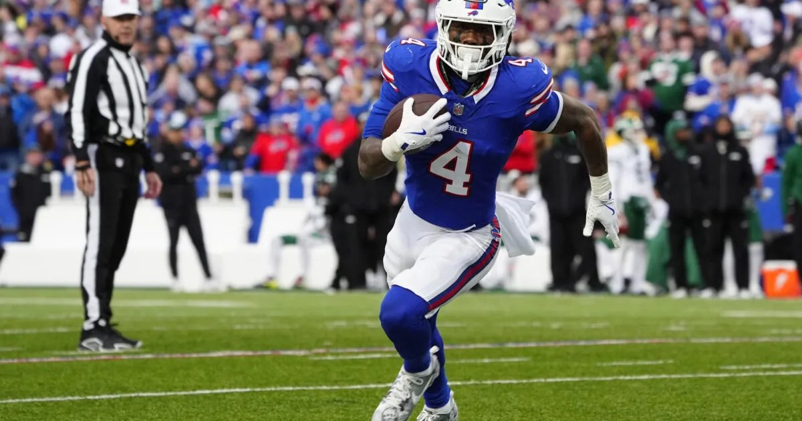

TSL Bets: James Cook OVER 90.5 rushing yards vs. Dolphins (-111)
James Cook has cleared 90.5 rushing yards in 4 of his last 5 games, and Miami is down all three starting interior linemen after allowing 100+ rushing yards to six straight opponents. The play: Cook OVER 90.5 rushing yards (-111, DraftKings) vs. the Dolphins.

The game slip
Miami Dolphins (1-8) at Buffalo Bills (8-1)
Sunday, 1:00 PM ET — Highmark Stadium, Orchard Park (CBS)
• Spread: Bills -16.5
• Total: 44.5
• Moneyline: Dolphins +880 / Bills -1540
• Odds source: DraftKings, November 22
• Weather: Sunny, 65°F at kickoff, light south wind — no factor
Injury report — Dolphins: RB De'Von Achane OUT (knee, IR). DT Zach Sieler OUT (biceps, IR). DT Jordan Phillips OUT (biceps, IR). DT Zeek Biggers OUT (knee, IR). QB Malik Willis OUT (groin, IR) — Kyle McCord makes his second career start. C Aaron Brewer questionable (concussion). P Bradley Pinion OUT (groin).
Injury report — Bills: CB Christian Benford OUT (groin). LB Dorian Williams OUT (calf). TE Dalton Kincaid doubtful (thumb/ankle). DT Ed Oliver questionable (oblique). S Damar Hamlin questionable (toe). TE Jackson Hawes questionable (shoulder). Cook is not on the injury report.
Storylines: The Bills have won five straight and own the NFL's No. 1 scoring offense at 31.9 points a game; the Dolphins have lost three straight at 1-8 and are starting a backup quarterback in his second career start. Miami has allowed 100+ rushing yards to six straight opponents, including 172 to Indianapolis last week — and now faces the league's second-ranked rushing offense (152.7 yards a game) with all three starting interior linemen on injured reserve. And Cook needs just 29 yards to reach 1,000 on the season: he leads the AFC with 971 rushing yards and nine touchdowns on 187 carries, with a rushing touchdown in each of his last five games.
The bet
James Cook OVER 90.5 rushing yards (-111, DraftKings)
Why this prop
Cook has cleared 90.5 rushing yards in 4 of his last 5 games — 157 (at Jets), 107 (at Vikings), 80 (vs. Ravens), 95 (at Raiders), 111 (at Rams), newest first — 550 yards over that stretch, and 80+ in five straight. He is over 90.5 in 6 of 9 games this season, averaging 107.9 yards a game at 5.2 yards a carry, and the projection sits at 109.0. The matchup is the edge: Miami's interior defensive line is gutted, its run defense ranks 18th in yards allowed per game (118.4), and Buffalo's run game is the engine of the league's top scoring offense. This is the props-first single by the book: a player prop with a real trend edge, a real matchup edge, and a near-even price.
The honest caveats
The -16.5 spread cuts both ways: if Buffalo pulls away early, Cook's fourth-quarter work goes to Ray Davis — Cook even briefly left the Jets game in the fourth quarter last week, though he returned. Miami's run defense is not a total pushover on paper (12th in EPA per rush), and Cook's career average against Miami is only about 47 yards a game over nine meetings — though those came against older, different Dolphins fronts. The edge is real, but it is an edge, not a lock.
The record
TSL Bets is 21-37 in November, 25-58 all-time.
If you or someone you know has a gambling problem, call 1-800-GAMBLER.
Sources
• Dolphins vs Bills Player Props & Best Odds (Win Daily)
• Miami Dolphins vs. Buffalo Bills prediction, pick for NFL Week 11 (DraftKings Network)
• Miami Dolphins at Buffalo Bills NFL Prediction, Picks & Odds for Week 11 (Athlon)
• How to Watch Dolphins vs. Bills: TV Channel, Live Stream, Time (FOX Sports)